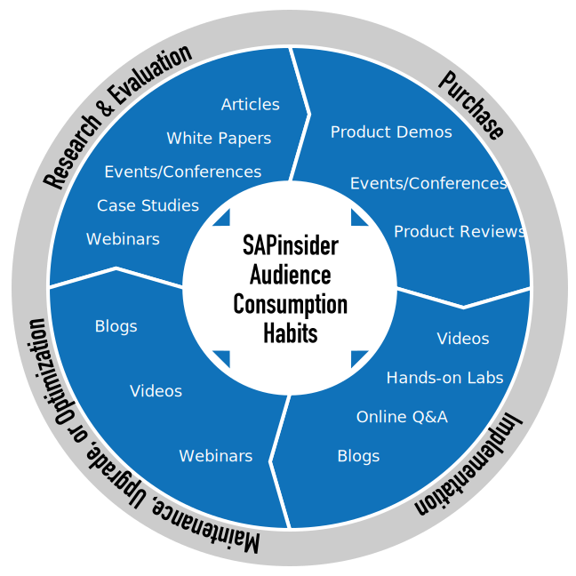

Understanding what channels SAP professionals use throughout the project life cycle is critical in connecting with them throughout their journey.


Brand Awareness
Strengthen your company’s image and help position how your company and solutions are perceived by SAP professionals.
Traffic Driver
Compel prospects to take action such as visit your website or access a content asset.
Thought Leadership
Position your company as an expert resource to build trust with SAP professionals.

Lead Generation
Fuel your sales pipeline with SAP professionals who accessed your gated content asset.
Push
Deliver your information directly to SAP professionals who have previously indicated an interest in a topic related to your products and services.

Pull
Show your message to SAP professionals when they are actively seeking information via SAPinsider Online or search vehicles.